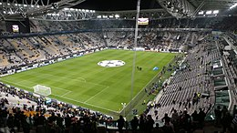

Storia della Juventus
La Juventus Football Club è stata fondata l'1 novembre 1897 a Torino. Da allora, il club è diventato uno dei più importanti e vincenti club di calcio in Italia e nel mondo, vincendo numerosi scudetti, coppe nazionali ed europee. La Juventus ha vissuto momenti alti e bassi, ma è sempre stata una squadra di alto livello con alcuni dei migliori giocatori del mondo. La Juventus è stata e continua ad essere un punto di riferimento del calcio italiano.
I colori
I colori sociali della Juventus sono il bianco e il nero. Questi colori sono stati scelti per la prima volta nel 1903 e sono rimasti gli stessi fino ad oggi. Il bianco rappresenta la purezza e l'integrità, mentre il nero rappresenta la forza e la determinazione. Questi colori sono diventati parte integrante dell'identità visiva della Juventus e sono riconoscibili in tutto il mondo.
Titoli vinti
- 36 campionati di Serie A
- 13 Coppe Italia
- 2 Coppe dei Campioni/UEFA Champions League
I migliori giocatori
Nella Juventus hanno giocato campioni del calibro di Michelle Platini, Zinedine Zidane, Cristiano Ronaldo, Gianluca Vialli, Gianluigi Buffon e molti altri.
Lo stadio
Dal 2011 il club bianconero gioca le sue partite interne allo Juventus Stadium, poi rinominato Allianz Stadium, costruito sulle ceneri del vecchio Delle Alpi e primo impianto moderno realizzato in Italia nonché di proprietà di una società calcistica, concepito prettamente per la disciplina. Costruito nel 2009, questo stadio moderno e tecnologico ha una capacità di 41.507 spettatori e offre un'esperienza unica per i tifosi della Juventus. L'Allianz Stadium è stato progettato per garantire il massimo comfort e sicurezza per i tifosi e ospita non solo le partite di calcio della Juventus, ma anche altri eventi sportivi e musicali.
